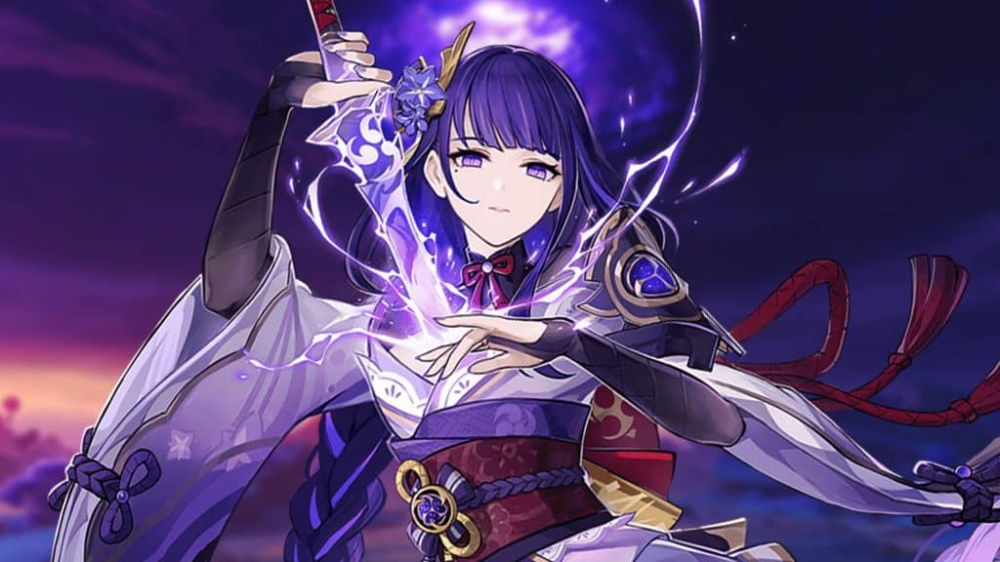

The Almighty Raiden Shogun, the God of Eternity and God of Inazuma.
However, What is behind this stoick and powerful leader?

The Raiden Shogun, Ei, was once the shadow of the former Baal, Makoto. They were the twin gods of
Electro, and Ei was called ‘Beelzebul’ at the time (though the populace barely knew of her). She acted
like a shadow general, fighting on the front lines as her sister. They ruled together for a time until
Makoto perished in the war that ravaged Khaenri’ah 500 years ago. Since then, Ei took on the name Baal,
and the people were none the wiser about the truth that she had been replaced.
Ruling with her sister, Ei fought in many battles. Makoto had never been one for violence after all. She’d
rather treasure the transient present, and cherish the peaceful and happy times. Ei worried more about the
future and what it could bring. She’s also less emotive than her sister and was more stoic of the two.
There are moments, though, where emotion shines in Ei’s face. Such times could be winning against her
friends in karuta, or eating delicious sweets. Maybe it was also the presence of her friends during those days.
Throughout her long life, she had lost many other friends. With the ideal of eternity and pained by loss, Ei sought
her definition of eternity. She made a puppet to deal with mortal body degradation. The process took years before it
was ready. One had been made as a proof of concept, and then set free into the world.